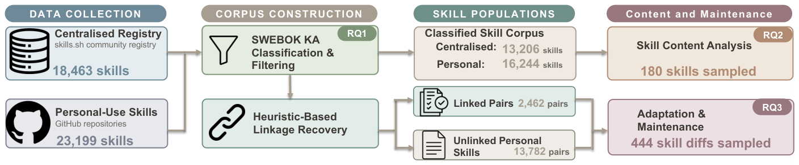
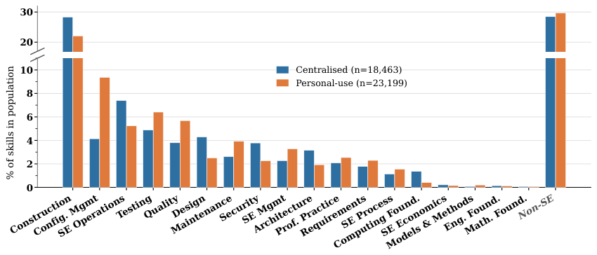

「上下文的纪律」系列 · 第 8 篇 · 完结
写进仓库的上下文，后来都怎么样了？
▍仓库里多出来的那种文件
打开一个2026年的GitHub仓库，根目录或.agents目录下常见一种文件：SKILL.md，YAML开头、Markdown正文，装着某个领域的知识、一套工作流程，有时还带脚本和参考资料。智能体按需加载它，用完即走。公共注册表skills.sh上挂着几万个这样的skill，个人仓库里还散落着更多自己写的。它们被当成智能体的能力单元买卖、复制、收藏。
有一个问题没人系统回答过：这些文件被写出来、复制进仓库之后，日子过得怎么样？有人维护吗？改的是哪部分？上游更新了跟不跟？墨尔本大学、新加坡管理大学和海德堡大学的团队今年发表了第一个大规模实证研究，把skill当作软件工程制品而不是智能体能力来看待：谁写的、怎么复用的、怎么改的、怎么维护的。
这也是本系列收束篇的合适人选。前面七篇讲的都是一次会话内的上下文管理；这一篇讲跨会话的部分：积累下来的上下文知识，怎么以文件的形式活在仓库里。
【人工补充位 · 建议2–4句】写你的现状：你的仓库里有没有SKILL.md或AGENTS.md这类文件，谁在维护；你是从注册表复制过skill还是全自己写，复制之后改过没有；你有没有遇到过skill内容过期、智能体照着旧说明干活的情况。
本期论文
From Registry to Repository: How AI Agent Skills Are Written, Adapted, and Maintained
从注册表到仓库：AI智能体skill是怎么被编写、适配和维护的
Haoyu Gao, Jai Lal Lulla et al.（墨尔本大学、新加坡管理大学、海德堡大学），2026-07（arXiv:2607.00911v2）
简要结论：挖掘skills.sh的18,463个skill与GitHub上5,876个仓库的23,199个skill、恢复3,709条复用链后发现：复用基本是一次性复制，70.3%的复用对近原样、53%复制后再未修改；修改集中在操作规格与知识资源的项目绑定上，而约束智能体行为的契约部分几乎不动。维护精力应放在项目特定绑定，注册表应收敛各写各的领域知识。
名词速查
▸ skill（SKILL.md）：结构化的上下文包，YAML头部加Markdown正文，按需加载，为智能体提供领域知识、工作流程和脚本。
▸ skills.sh：公共的skill注册表，本文数据截止2026年3月4日，收录安装数20以上的skill共18,463个。
▸ SWEBOK：IEEE计算机学会发布的软件工程知识体系指南（v4版18个知识域），本文用它给skill所含知识分类。
▸ 复用链：注册表里的skill与仓库里它的本地拷贝之间的对应关系，本文用名称匹配加最长公共子串相似度恢复，阈值0.1。
▸ 主题分析：质性研究方法，对样本文本逐条编码，逐层归并成子题和主题；本文用于180个skill的内容与444处修改。
两个数据源（图2）。中央侧：skills.sh注册表，取安装数20以上的18,463个skill。个人侧：在GitHub上按文件名搜SKILL.md，从11万个候选里剔除fork、低星仓库和聚合站，再按统计方法截掉异常多产的仓库，得到5,876个仓库的23,199个skill。

图 2｜研究设计：两侧收集、恢复复用链、按SWEBOK知识域分类，再对180个skill的内容与444处修改做主题分析（原论文Fig 1）
复用链的恢复是方法上最要紧的一步：拿YAML里的name字段匹配候选，用最长公共子串相似度打分，0.1为阈值；最容易出错的边界区间（相似度0.1到0.3）由两名作者人工审计，一致率90%，抽的30对里28对确认为真复用；阈值以下的30对名称匹配样本全部是独立写作。最终得到3,709条复用链，涉及1,673个注册表skill（占8.5%）；个人仓库这边16.0%的skill可溯源到注册表，76.0%无链接。知识域分类用两个开源模型先跑、升级提示词到一致性0.79，再由两名作者双盲标285条金标准（从0.68改到0.85），最终模型对金标的一致性0.82，跑全集得29,450个软件工程skill。
按SWEBOK的18个知识域分类，Software Construction（软件构造）在两个人群里都是第一大类：注册表28.3%、个人22.1%，其后是工程运营、测试、配置管理，剩下的14个知识域都是长尾（图1）。两个人群的方向差异清晰：注册表偏通用编码能力，构造类比个人仓库高6.2个百分点，设计与架构类也更高；个人仓库偏项目生命周期，配置管理9.4%对4.1%是差距最大的一类，测试、质量、维护也更高。另外两个人群各有约29%的skill与软件工程无关，语音合成、日常事务之类，可见这个格式早已外溢出编码场景。

图 1｜skill的SWEBOK知识域分布：构造类双主导，注册表偏通用编码，个人仓库偏配置管理与测试维护（原论文Fig 2）
包装与内容层面（180个skill的分层抽样，频次是样本口径）。必填项的合规率很高：SKILL.md存在、YAML头有效、name与description齐全，都在99%上下。可选字段则是另一番景象：license、兼容性声明、allowed-tools这类出现率只有3%到16%。正文长度克制：注册表84.5%在500行以内，个人仓库93.7%。内容上归纳出六个主题：
| 主题 | 装什么 | 代表频次 |
|---|---|---|
| 界定与编排任务 | 适用场景、执行步骤的编排 | — |
| 执行生命周期 | 可执行命令、可复用代码与配置、产出物模板 | 产出物塑形50% |
| 产出质量 | 状态检查、产出验证、失败模式与恢复步骤 | 失败与恢复50% |
| 行为约束 | 禁止事项、最佳实践及理由 | 最佳实践77%、禁止45% |
| 领域知识 | 内联知识（含经验阈值）、指向外部参考资料 | 指向外部72% |
| 用户与智能体协作 | 人机交互约定（如关键操作需确认）、任务委托 | 用户交互63%、委托24% |
表 1｜skill内容的六个主题（原论文Table II精简；频次为180个分层抽样skill的样本口径，作者整理）
注册表skill进入仓库的方式，数据给出的画像非常干脆：复制，然后大多不再动。四条数字：复用对里70.3%的相似度不低于0.99，近乎原样搬迁；53%的复用skill在收养之后从未被修改过；在从未本地修改的1,295个里，40.2%的上游在收养之后更新过至少一次，这些更新一份也没有流到本地；本地改过、上游也变了的689个里，62.3%各自独立演化，而不是吸收上游改动。论文的用词是一次性复制（one-time copy）。
"…reuse is largely a one-time copy operation: most reused skills remain near-verbatim, 53% are never modified after adoption, and subsequent local maintenance is overwhelmingly additive."
── 中译：复用基本上是一次性复制操作：大多数被复用的skill保持近原样，53%在收养后再未修改，其后的本地维护以增量为主。（原论文摘要）
为什么这件事比看起来要紧：skill不是普通文档。过期的README，人读的时候能察觉不对绕过去；过期的SKILL.md，智能体会照着执行。这是论文在相关工作里点出的立场，也是它与依赖管理的对照所在：skill和npm包一样是依赖，但它混合自然语言与代码、没有版本锁定、改动无通知，是格外易变的依赖。
"A human reading an out-of-date README can identify and bypass the discrepancy, whereas an agent consumes a SKILL.md and acts on its environment, so stale guidance is executed rather than read."
── 中译：人读过期的README能识别并绕开不一致；智能体消费SKILL.md并对其环境采取行动，过期的指引是被执行，而不是被阅读。（原论文§II）
对444处修改（188对定制化对照加256个独立演化样本）的编码给出六类改动，定制化与演化两个场景的频次对照如下。
| 改动类别 | 定制化（188对） | 演化（256个） | 要点 |
|---|---|---|---|
| 配置元数据 | 40.4% | 43.1% | 激活条件、来源信息 |
| 重排操作规格 | 56.9% | 61.6% | 工作流、工具用法、输出示例 |
| 校准行为约束 | 30.9% | 39.6% | 硬约束与软建议 |
| 适配知识与资源 | 46.3% | 50.2% | 内联知识、参考指针、捆绑资产 |
| 维护兼容性 | 26.6% | 26.7% | 移植重打包仅见于定制化（12.2%对0） |
| 排版与措辞 | 55.9% | 30.6% | 重排版是定制化最高频单类（48.9%） |
表 2｜六类修改的频次（原论文Table III精简，频次为444处修改的编码样本口径，作者整理）
定制化与演化的分工在两组对照里最清楚：定制化把skill重新接地到宿主项目（换环境、换工具、换路径，移植重打包12.2%对0%是数据里最锐的分歧），演化则往里加内联领域知识（32.5%对19.7%）。更稳定的是另一部分：论文发现，塑造skill与用户交互方式、运行时状态监控、失败恢复的那些内容，构成一份稳定的行为契约，跨复用和维护一直随skill旅行，下游极少修订。
这个发现的两面都要看到。好的一面：契约稳定意味着skill的行为可预期，复制过来不会走样。坏的一面：创建时写糙的契约，下游几乎不会修订，里面的问题会一直潜伏。论文给作者的建议正落在这里：契约部分在创建时就要仔细打磨，因为它的命运基本在第一天就定了。
写给作者：把创建当成唯一一次认真写契约的机会；触发条件要写精确（枚举skill该被激活的具体场景，模糊的描述会让智能体根本不调用它）；经验性的阈值和理由写全，下游会原样继承。
写给使用者：复制那一刻就是分叉。既然53%再不会改、上游更新四成从未同步，本地化就该在收养当天做掉：改元数据、对齐环境与路径、删掉用不上的捆绑资产；之后盯住激活行为，别让skill在不该出场的任务里被加载。
写给注册表与平台：数据里大量skill是绑定单一智能体的（比如只为Claude写），后续维护相当一部分是在往别的智能体移植，平台中立的格式能省掉这层成本；更重要的是收敛重复：不同仓库在各自重写同一批领域知识，注册表应该提供合并与去重的机制，让知识沉淀一处、引用多处，而不是每个仓库维护一份会各自过期的拷贝。
▍注记：这篇论文的边界
复用链靠名称匹配加文本相似度恢复，重度改写或改名的链路会漏；SWEBOK分类强制每个skill归入单一知识域；知识域分类由语言模型完成（对人工金标一致性0.82）；内容六主题与六类修改的频次是180个与444个分层样本的口径，描述模式而非全集占比；定制化与演化的统计对比未计入仓库内聚类，论文自己读作探索性模式而非总体效应。研究截止2026年3月，skill生态变化快，快照时效有限。
▍八篇收束：上下文的纪律到底是什么
回到系列的起点。第一篇看过一项对六万多个仓库的对照研究（参考本系列第一篇荐读论文，关于AGENTS.md全局注入效果的试验）：常驻窗口的上下文文件不涨成功率、还多花两成成本。当时的问题是从"该不该写"开始的；八篇走完，答案比"写或不写"具体得多。容量有边界、位置有偏（第二篇）；材料找不到就是找不到，检索是独立的能力（第三篇）；于是有四条运行时的路：动手前备料、进窗口前放行、进了窗口压而不丢、时机交给模型自己（第四到七篇）。而这一篇补上最后一块：会话结束之后，值得留下的上下文以skill的形式进仓库，从此有了注册表、复用和维护，也就有了过期的风险。该不该写的完整答案，是写了之后怎么活。
一路串下来的那句话到这里可以说全了：上下文是稀缺资源。窗口里每一次装载都有成本，所以该按需、该过滤、该压缩、该学会时机；仓库里每一份沉淀都有维护，所以复制要本地化、契约要一次写好、知识要收敛在一处。运行时的纪律加仓库里的纪律，合起来才是完整的上下文工程。
落到自己的工作流，三个可以直接用的做法：
1. 收养skill当天完成本地化：改元数据与激活条件、对齐环境和路径、删无用资产。数据说得很清楚，拖到以后就是永远不改。
2. 自己写skill时，把行为契约当一次性投资：交互方式、状态检查、失败恢复这些下游不会改的部分，创建时写到位；触发场景写精确，写模糊等于不触发。
3. 给仓库里的上下文资产做一次盘点：哪些SKILL.md/AGENTS.md在库、多久没动、上游有没有新版、还有没有智能体在按它执行。过期的指引不是文档问题，是行为问题。
【人工补充位 · 建议4–6句，系列收束篇可写长】八篇读下来，对你的工作流最有用的一篇和最无用的一篇各是哪个，为什么；你会怎么处置自己仓库里现有的上下文文件（留、删、还是重写成skill）；如果给这个系列再补一个主题，你想补什么。
论文：From Registry to Repository（arXiv:2607.00911v2，2026-07，Haoyu Gao, Jai Lal Lulla et al.，墨尔本大学/新加坡管理大学/海德堡大学）。复现包见zenodo.org/records/21032973。文中图表均引自原论文（Fig 1/2，文章内编号见图注）；表1–2依据原论文Table II、Table III精简；数字已逐项与论文PDF原文核对；表内频次为分层样本口径。